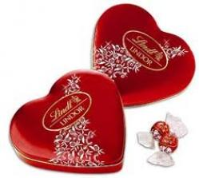

CHOCOLATES
|
CHOCOLATE LINDT
|
Lindt es la más popular de las marcas de chocolate de calidad en el mundo.
Es una firma suiza fundada en 1845, que produce chocolates menos artesanales
que muchos de los mencionados en esta lista pero con ingredientes seleccionados
que producen un sabor característico xclusivo de esta marca.

Página oficial